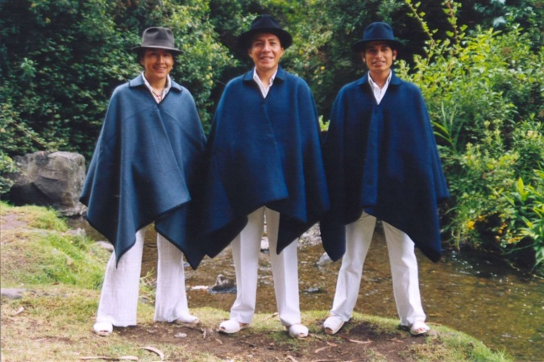

|
La mayoría de tiendas de ropa están dedicadas a la mujer porque, comenta Cacuango,
son las más vanidosas. La vestimenta del hombre está compuesta por un pantalón, camisa
y alpargatas blancas. Lo complementan un poncho y sombrero
VESTIMENTA DE LA MUJER OTAVALEÑA
Los atuendos que utilizan las mujeres otavaleñas son muy hermosos y llamativos que han hecho que
sean muy conocidas por su belleza.
CAMISA.-Es una prenda de color blanco que llega hasta los tobillos cuyo pecho y mangas son bordados
con hilos multicolores que representan las flores y plantas de nuestra madre naturales sirven como blusa y enagua.
ANACO BLANCO.- Mantas rectangulares de algodón en cuyos bordes tienen bordados de colores, se los envuelve alrededor
de la cintura el cual refleja el aspecto sagrado de la mujer.
ANACO NEGRO.- Pieza rectangular que va sobre la manta blanca con bordados de colores.
MAMA CHUMBI.- Faja grande, elaborada con el alma de cabuya y lana roja que simboliza la fuerza, tiene 12 cm.
de ancho y 1,50 metros de largo, los bordes suelen ir con un adorno de color verde presentando así una combinación llamativa.
HUAGUA CHUMBI.- Su ancho es de 5 cm. por 3 metros de largo, tiene hermosas figuras de uno o varios colores se los fabrica
en telares horizontales que da seis o siete vueltas sobre el mama chumbi dando una forma femenina al cuerpo.
CINTA:- Su ancho es de 2cm. por 1metro de largo tiene hermosas figuras de muchos colores, con la cual se envuelve el cabello.
FACHALINA.- Paño blanco o negro de dos varas de largo que va sobre la camisa sostenida en la parte superior mediante un
nudo o con prendedores de cobre o plata. Tiene 2 formas de ponérselos
a) Sujetado al pecho significa que es una mujer casada y demuestra elegancia.
b) Sujetado al hombro significa que es una mujer soltera y para realizar las tareas con facilidad y comodidad.
HUMA WATARINA.- Es una prenda de lana de color negro con franjas blancas el cual representa el equilibrio, la dualidad,
es decir el “par” hombre-mujer. De igual forma protege del sol y del frío, se envuelve en la cabeza a manera de turbante.
Otra manera de ponérselo también es en forma de pirámide esto es para protegerse del sol cuando van a cosechar los
frutos de la tierra o trabajo en la misma.
REBOSO.- Es una manta que puede ser de cualquier color lo utilizan para cargar en su espalda a las wawas, las compras
del mercado y otros. Sirve para protegerse del frío o también como símbolo de elegancia, por lo general lo utilizan
las mujeres casadas.
ALPARGATE.- Son elaborados a base de hilo y cabuya, las mujeres siempre utilizan los colores obscuros como el negro o azul
marín, ayuda a proteger los pies.
GUALCA.- Son mullos dorados que se lo coloca alrededor del cuello en numerosas sartas adornados con corales o mullos finos,
demuestran el maíz y la riqueza de nuestra tierra.
OREJERAS.- Son semejantes que las gualdas, realizadas por tres sartas de mullos y cuentas, los extremos se unen en un nudo
el mismo que se sujeta con un cordón en forma de círculo, lleva moneda de plata antigua o crucifijo; se sujeta sobre el
pabellón de la oreja y se cuelgan hasta los hombros, se los utiliza para ocasiones especiales o fiestas.
MANILLA.- Por lo general son mullos de color rojo o corales finos que se los ponen en las muñecas, permite que las mujeres
tengan fuerzas en sus manos para poder trabajar en la tierra.
ANILLO.- Son de bronce, antiguamente las mujeres lo llevaban puestos en todos los dedos de la mano con el pasar del tiempo ya
no es tan común.
SOMBRERO.-Se implantó con la llegada de los españoles, son de paño y color blanco lo utilizan solamente en ocasiones importantes.

VESTIMENTA DEL HOMBRE OTAVALEÑO
Desde los tiempos antiguos el hombre otavaleño ha utilizado un vestuario sencillo y práctico.
CAMISA.- Son de color blanco con mangas largas con los puños y cuello en una tela más fina; refleja la limpieza
espiritual de la persona.
PANTALÓN BLANCO .-En los años 70 se introdujo el pantalón actual como copia de los pantalones de lo blanco mestizos,
sin embargo se respeta el color blanco que es parte de nuestra identidad; es de lienzo blanco, ancho, llega hasta mas
debajo de las rodillas y con un cordal para ceñirse en la cintura, refleja la limpieza espiritual del hombre.
PONCHO.- Se los ha elaborado basándose en el modelo de las montañas andinas. Son de lana o paño tejidos en telar de
mano con colores oscuro, pueden ser lisos o figuras cuadradas, protege del frío de las montañas andinas.
Doblados en el hombre demuestra la elegancia del hombre indígena otavaleño.
ALPARGATE.- Solían traer hojotas que es una cierta atadura sobre la suela del alpargata, de manera que solo tenían
guardada la planta del pie, ahora tienen el mismo diseño que la mujer con la diferencia de que el hombre siempre utiliza
el color blanco, ayuda a proteger el pie.
SOMBRERO.- Son de paño generalmente de color obscuro negro o café, se colocan encima de encima de la cabeza como una
sombrilla que protege del sol.
TRENSA.- Antiguamente el indígena otavaleño lo dejaba crecer el cabello por delante y por detrás atándose un hilo a la
cabeza en el que metían el cabello para poder ver. Ahora el indígena otavaleño se caracteriza por su trenza larga que
va sobre la espalda para lo cual utiliza un cordón y así se mantiene con su peinado durante todo el día.

|